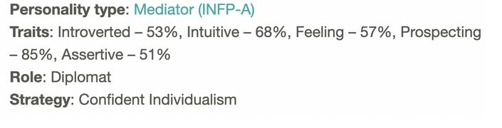
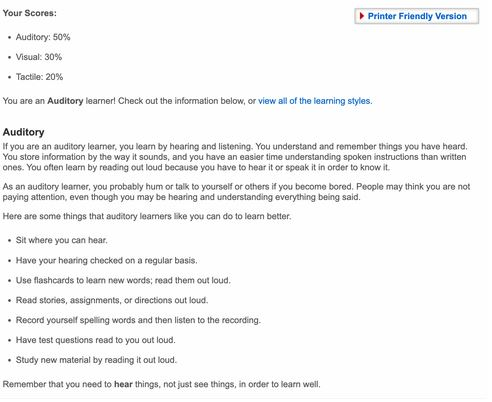
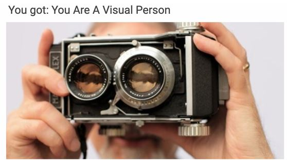

My interest in IT is varied, and has been present for most of my life! From a very young age, I've had access to technology such as computers, televisions, gaming consoles and the likes. Pointing to a specific point in my life which seriously peaked my interest in IT, was on my 12th birthday, when I received a hand me down iphone. Some of the specific interests I have in IT are: video games, web-development, PC building and keyboard building; all of which I also have extensive experience in.
My university career path has been an interesting one. Initially, after completing highschool i studied for a Bachelor of Science at Melbourne University. After a year of studies there, I was under the impression that it was too broad of a university course for me, and shifted to Deakin University studying a Bachelor of Biomedical Science. At this point, I continued the course for two and a half years, hoping to see and experience a subject, an event or anything at all, that would finally reveal and show my interest in the field, however it never arised. As such, I took the plunge and partook in a 6 month coding bootcamp, and from then onwards I never looked back! I developed my own project management app, linked to github commits, and used this project to apply for jobs all over Melbourne; and was fortunate enough to land a full-time web developer role, which I am currently working at. As for why I decided to come to RMIT, was the ability for me to study completely online at my own pace, along with RMIT being a well respected university when it comes to the Information Technology field.
One of the main things I hope to achieve during my studies here, is a broader and better understanding of concepts which I either have self taught myself, or only received a very brief introduction to during my coding bootcamp. Such concepts such as: Sorting Algorithms, programing styles (i.e OOP), networking skills and the likes.
My Ideal job prior to the completion of my coding bootcamp was to become a full-stack web developer; and I was fortunate enough to have completed this goal of mine late last year. The job listing has since been lifted, however i still have the briefing:
Link To Briefing
Whilst this was a dream come true for me, to acquire a stable job in the field of my interest, I do still have ambitions to reach for something greater. My absolute end goal would be to work for a company like google. As such, this was a main driving factor for me wanting to go back to university and acquire a degree. The skills and qualifications required for my current job were: HTML, CSS, Javascript and PHP, all of which I had knowledge of prior to applying. Additional skills were learnt on site, such as SFCC and Magento. This skill set would also be similar to acquiring a job at google, however another prerequisite would also be having a bachelor's degree or higher.
16 Personalities
Learning Style Test
VAK Test
It is interesting that one of the tests depict me as an auditory person, while the other marks me as a visual person. I find this interesting because I found it very difficult to choose between the prompts which suggested being auditory or visual. This is because I align with being both an auditory and visual person. In my day to day life, I utilize both auditory and visual cues to conduct basic tasks. This also aligns with the 57% feeling i received on the 16 personalities quiz.
In the 16 personality test, it depicts me as a confident individualist. I do find this accurate, whilst I tend to follow guidelines and orders given in the workplace, it isn’t uncommon for me to form and base an opinion of mine on the work I do. As such, in the work I do, I may sometimes feel the way I complete something is, whilst not necessarily the only way to do it, but maybe a more correct way of doing things. However this is offset by my 53% introvertedness which leads me to ultimately agree with other people, even if I think my solution or opinion is the correct way of doing things.
As mentioned above, I should take this information and not let my opinions form too strong of a bias in the work i do, whilst at the same time should also not let my introvertedness stop me from depicting what i think to be correct.
The project idea that I would like to complete is to create a mock high-end fashion company website, using current web development and web design trends. I would like the project to be hosted using heroku and purchase a mock domain name. The motivation for this idea came from me frequently browsing and being in awe of the cool animation, design trends and complex css grid and flexbox layouts that fashion companies are able to bring to life. I have dabbled in it myself a few times, one of which can be seen here (homepage and blog-page are all that works)
https://sooova.github.io/Validus-Studios-Concept/
When making the above website, everything was done statically. There is no backend, no database and no templating; it was more a test to see if my design and front-end skills were up to speed. As such, the project that i would like to create will be as follows: I would like it to be a full-stack application utilizing a database, javascript front-end library, either mongoDB or mysql database and various other front-end javascript libraries to help with animation handling.
More specifically, I would like the website to have a homepage, product listing page, product display page, about us page, cart page, blog page. As this project will be for demo purposes only, i will implement a demo stripe payment gateway and will not use a headless ecommerce backend such as shopify or magento commerce.
On the homepage, I would like to use current web design and web development trends, such as animations, mixed in with monotone colors. On the product listing and display page, I would like to aim for a design similar to the likes of Zara, Glassons and louis vutton, who all incorporate similar aspects to their website. The main goal of this website is to flesh out my front-end capabilities, which was the main goal of my previous attempt, but to also improve my backend skills. I would also like to shoot for an above 90% score on all categories on google lighthouse SEO. If possible, I would like to also take my own photos for the products on the page.
In terms of the technologies that will need to be used, they likely will be the following: Next.Js + react.Js for front-end. MongoDB or Mysql for databases. Heroku for deployment. Node.js. GraphQL and Apollo server for API queries. The skills required will be: HTML, CSS, Javascript as well as either SQL. On top of this, I will have to deal with aliases and CNAMES for website domain hosting, and figma for initial design prototypes. All of these skills I already have in some capacity, and as such this project should be very doable given enough time and effort.
Pending a successful project, I will have been able to make a full-stack application from the ground-up, using modern design and web development trends. As such, it will further my skills and capabilities as a full-stack developer, whilst also providing a worthy portfolio piece for the future.
{kind=link}